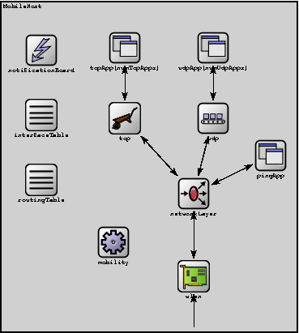
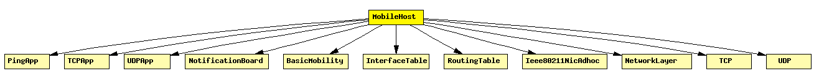

File: Nodes/Adhoc/MobileHost.ned
Models a mobile host with a wireless (802.11b) card in ad-hoc mode. This model contains the new IEEE 802.11 implementation, Ieee80211Nic, and IP, TCP and UDP protocols. The mobility model can be dynamically specified with the mobilityType parameter.
See also: MFMobileHost, WirelessHost
The following diagram shows usage relationships between modules, networks and channels. Unresolved module (and channel) types are missing from the diagram. Click here to see the full picture.
If a module type shows up more than once, that means it has been defined in more than one NED file.
| BasicMobility | This is not an actual mobility model, but a prototype for other mobility models. |
| Ieee80211NicAdhoc | This NIC implements an 802.11 network interface card in ad-hoc mode. |
| InterfaceTable | Keeps the table of network interfaces. |
| NetworkLayer | Network layer of an IP node. |
| NotificationBoard | Using NotificationBoard, modules can now notify each other about "events" such as routing table changes, interface status changes (up/down), interface configuration changes, wireless handovers, changes in the state of the wireless channel, mobile node position changes, etc. |
| PingApp | Generates ping requests and calculates the packet loss and round trip parameters of the replies. |
| RoutingTable | Stores the routing table. (Per-interface configuration is stored in InterfaceTable.) |
| TCP | TCP protocol implementation. Supports RFC 793, RFC 1122, RFC 2001. Compatible with both IPv4 and IPv6. |
| TCPApp | Template for TCP applications. |
| UDP | |
| UDPApp | Template for UDP applications. |
| Name | Type | Description |
|---|---|---|
| numTcpApps | numeric const | |
| numUdpApps | numeric const | |
| tcpAppType | string | |
| udpAppType | string | |
| IPForward | bool | |
| routingFile | string | |
| mobilityType | string |
| Name | Direction | Description |
|---|---|---|
| radioIn | input |
| Name | Type | Description |
|---|---|---|
| tcp.mss | numeric const | maximum segment size |
| tcp.advertisedWindow | numeric const | in bytes (Note: normally, NIC queues should be at least this size) |
| tcp.tcpAlgorithmClass | string | TCPTahoe/TCPReno/TCPNoCongestionControl/DumbTCP |
| tcp.sendQueueClass | string | TCPVirtualDataSendQueue/TCPMsgBasedSendQueue |
| tcp.receiveQueueClass | string | TCPVirtualDataRcvQueue/TCPMsgBasedRcvQueue |
| tcp.recordStats | bool | recording seqNum etc. into output vectors on/off |
| pingApp.destAddr | string | |
| pingApp.srcAddr | string | |
| pingApp.packetSize | numeric const | of ping payload, in bytes |
| pingApp.interval | numeric | time to wait between pings (can be random) |
| pingApp.hopLimit | numeric const | TTL or hopLimit for IP packets |
| pingApp.count | numeric const | stop after count ping requests, 0 means continuously |
| pingApp.startTime | numeric const | send first ping at startTime |
| pingApp.stopTime | numeric const | send no pings after stopTime, 0 means forever |
| pingApp.printPing | bool | dump on stdout |
| networkLayer.ip.procDelay | numeric const | |
| networkLayer.arp.retryTimeout | numeric | number seconds ARP waits between retries to resolve an IP address |
| networkLayer.arp.retryCount | numeric | number of times ARP will attempt to resolve an IP address |
| networkLayer.arp.cacheTimeout | numeric | number seconds unused entries in the cache will time out |
| wlan.mgmt.frameCapacity | numeric | |
| wlan.mac.address | string | MAC address as hex string (12 hex digits), or "auto". "auto" values will be replaced by a generated MAC address in init stage 0. |
| wlan.mac.maxQueueSize | numeric const | max queue length in frames; only used if queueModule=="" |
| wlan.mac.bitrate | numeric const | |
| wlan.mac.rtsThresholdBytes | numeric const | longer messages will be sent using RTS/CTS; use 2346 for default |
| wlan.mac.retryLimit | numeric const | maximum number of retries per message, -1 means default |
| wlan.mac.cwMinData | numeric const | contention window for normal data frames, -1 means default |
| wlan.mac.cwMinBroadcast | numeric const | contention window for broadcast messages, -1 means default |
| wlan.radio.channelNumber | numeric const | channel identifier |
| wlan.radio.transmitterPower | numeric const | power used for transmission of messages (in mW) |
| wlan.radio.bitrate | numeric const | (in bits/s) |
| wlan.radio.thermalNoise | numeric const | base noise level (dBm) |
| wlan.radio.pathLossAlpha | numeric const | used by the path loss calculation |
| wlan.radio.snirThreshold | numeric const | if signal-noise ratio is below this threshold, frame is considered noise (in dB) |
| wlan.radio.sensitivity | numeric const | received signals with power below sensitivity are ignored |
module MobileHost parameters: numTcpApps: numeric const, numUdpApps: numeric const, tcpAppType: string, udpAppType: string, IPForward: bool, routingFile: string, mobilityType: string; gates: in: radioIn; submodules: notificationBoard: NotificationBoard; display: "p=60,70;i=block/control"; interfaceTable: InterfaceTable; display: "p=60,150;i=block/table"; routingTable: RoutingTable; parameters: IPForward = IPForward, routerId = "", routingFile = routingFile; display: "p=60,230;i=block/table"; tcpApp: tcpAppType[numTcpApps] like TCPApp; display: "p=163,67;i=block/app"; tcp: TCP; display: "p=163,154;i=block/wheelbarrow"; udpApp: udpAppType[numUdpApps] like UDPApp; display: "i=block/app;p=272,67"; udp: UDP; display: "p=272,154;i=block/transport"; pingApp: PingApp; display: "i=block/app;p=343,200"; networkLayer: NetworkLayer; parameters: proxyARP = false; gatesizes: ifIn[1], ifOut[1]; display: "p=248,247;i=block/fork;q=queue"; wlan: Ieee80211NicAdhoc; display: "p=248,349;q=queue;i=block/ifcard"; mobility: mobilityType like BasicMobility; display: "p=149,307;i=block/cogwheel"; connections nocheck: for i=0..numTcpApps-1 do tcpApp[i].tcpOut --> tcp.from_appl++; tcpApp[i].tcpIn <-- tcp.to_appl++; endfor; tcp.to_ip --> networkLayer.TCPIn; tcp.from_ip <-- networkLayer.TCPOut; for i=0..numUdpApps-1 do udpApp[i].to_udp --> udp.from_app++; udpApp[i].from_udp <-- udp.to_app++; endfor; udp.to_ip --> networkLayer.UDPIn; udp.from_ip <-- networkLayer.UDPOut; networkLayer.pingOut --> pingApp.pingIn; networkLayer.pingIn <-- pingApp.pingOut; // connections to network outside radioIn --> wlan.radioIn; wlan.uppergateOut --> networkLayer.ifIn[0]; wlan.uppergateIn <-- networkLayer.ifOut[0]; endmodule